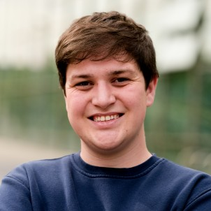
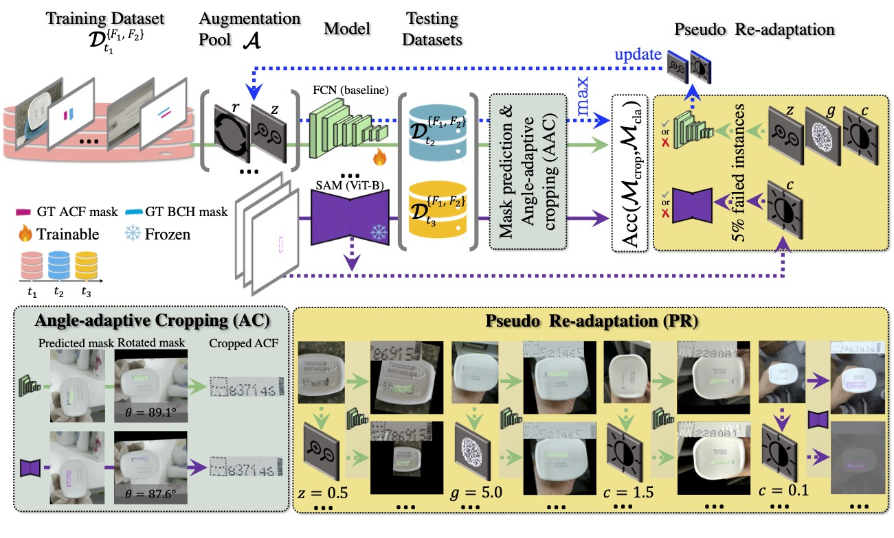
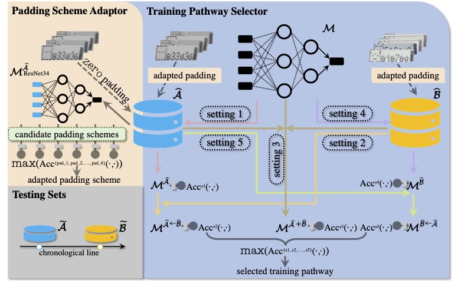
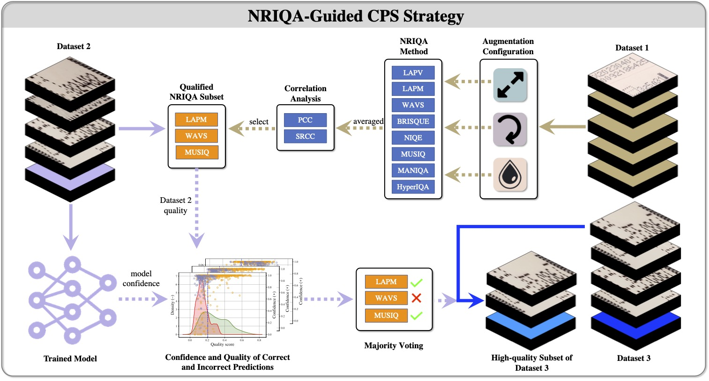

Deep Learning and Computer Vision Researcher

Machine Learning Engineer and Computer Vision Researcher with 5+ years of experience developing and deploying advanced neural networks for image and video understanding, synthetic data generation, and robustness-critical visual systems. Strong background in PyTorch-based R&D, generative and augmentation-driven pipelines, and large-scale training and evaluation of deep neural networks.
Proven track record of state-of-the-art research published at CVPR and ECCV (Best Paper Award), with hands-on experience spanning graphics-aware data generation (Unreal Engine 5), domain adaptation, and synthetic-to-real generalisation. Experienced in collaborating across multidisciplinary R&D teams and translating research prototypes into production-ready systems for real-world deployment.
Newcastle University, Autumn 2021 - December 2025
Thesis: Robust and Explainable Deep Learning for Fine-Grained Classification in Brand Protection
Industrial collaboration with P&G; research integrated into production systems.
Newcastle University, Autumn 2018 - Summer 2021
Dissertation: Fine-Grained Image Classification Using Siamese Neural Networks and Detection of Unseen Classes
German Aerospace Center (DLR), Sankt Augustin, April 2025 - July 2025
Built an end-to-end drone detection pipeline using YOLOv5 / PyTorch, improving synthetic-to-real robustness.
Generated large-scale synthetic datasets in Unreal Engine 5 & AirSim across varied weather domains and viewpoints.
Created automation tools for dataset generation, reducing manual workload and improving reproducibility.
Contributed to domain shift and synthetic data research; pipelines adopted for ongoing internal use.
Newcastle University, 2021-2025
Developed fine-grained counterfeit detection systems using thousands of real and synthetic samples.
Designed re-adaptation and augmentation frameworks outperforming internal baselines under domain shift.
Evaluated robustness under blur, noise, compression, and sensor artefacts; influenced P&G inspection workflows.
Published at CVPR, ECCV, VISAPP; received Best Paper Award.
Research deployed in production pipelines for model retraining and quality control.
School of Computing, Newcastle University, 2021-2025
Supported MSc Deep Learning students with debugging, experiment design, and evaluation.
Improved student proficiency in Neural Networks and Computer Vision experimentation.
Authors: Zheming Zuo, Joseph Smith, Jonathan Stonehouse, Boguslaw Obara
Conference: European Conference on Computer Vision

Authors: Zheming Zuo, Joseph Smith, Jonathan Stonehouse, Boguslaw Obara
Conference: IEEE/CVF Conference on Computer Vision and Pattern Recognition Workshops, 2024
Pages: 183--193

Authors: Joseph Smith, Zheming Zuo, Jonathan Stonehouse, Boguslaw Obara
Conference: International Joint Conference on Computer Vision, Imaging and Computer Graphics Theory and Applications, 2024
Pages: 448--457

Conference: CVPR Workshop on Fair, Data-Efficient, and Trusted Computer Vision
Location: Seattle Convention Centre, Seattle, USA
Date: Summer 2024
Conference: VISAPP
Location: Precise House Mantegna Roma, Rome, Italy
Date: Winter 2024